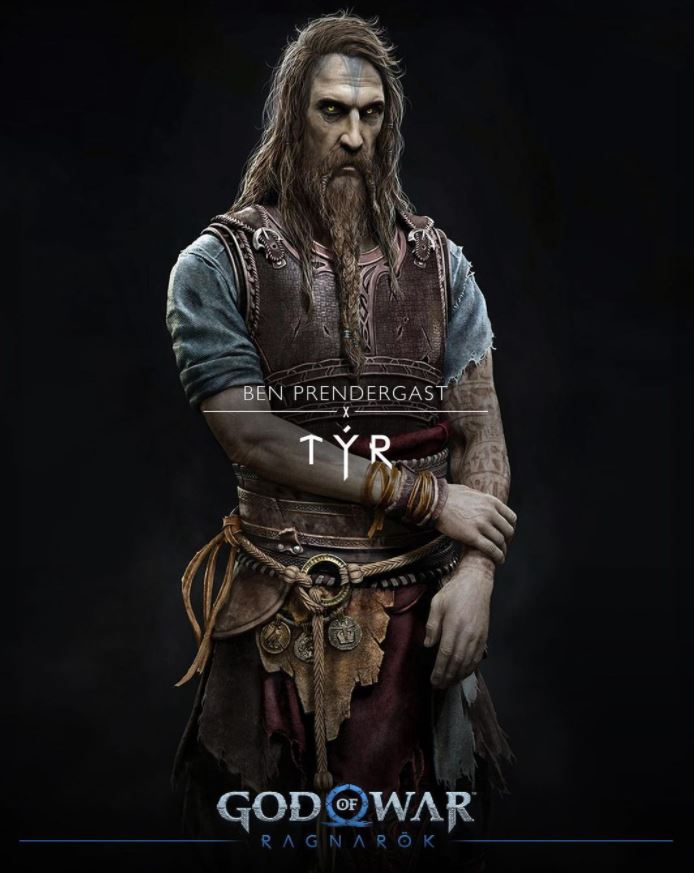
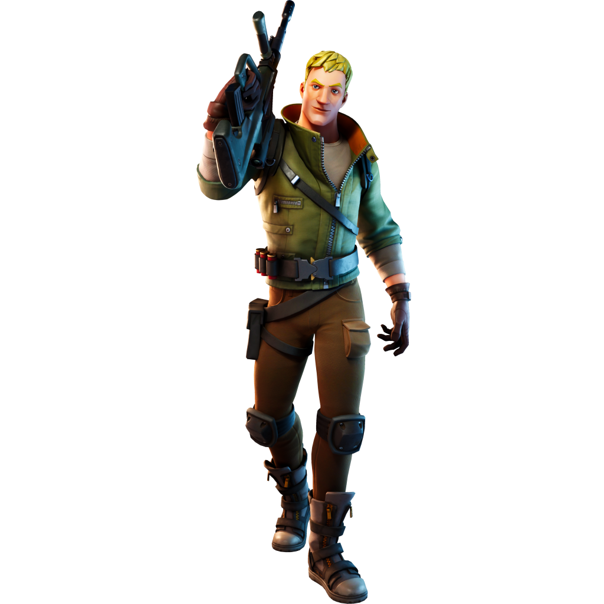

THOR
El Dios del Trueno y la Fuerza será el villano principal de Kratos en God of War Ragnarok, interpretado por el actor Ryan Hurst
TYR 
Tyr es el Dios de la Guerra nórdico, cuya principal característica es que le falta una mano. Esto va ligado directamente con el noveno detalles de este reportaje, así que presta atención.
Kratos
En el caso de Kratos, podemos ver que lleva dos escudos distintos a los del primer juego, que quizá han sido modificados y mejorados por los enanos.
Atreus
Para empezar, Atreus lleva un colgante con una punta de lanza. Si os fijáis bien, esta es la punta utilizada para derrotar a Baldur, uno de los jefes de God of War de 2018
Master Chief
El Suboficial Jefe Maestro John-117, [1] conocido como Jefe Maestro (Master Chief en inglés), es un SPARTAN-II de la Armada del UNSC y el principal protagonista en el Universo de Halo. Ha servido como uno de los personajes más importantes en la Guerra Covenant y tiene cerca de 30 años de servicio activo militar, además de poseer todas las condecoraciones que el UNSC ofrece, excepto la de "Prisionero de Guerra".
LINK
Link (リンク, Rinku) es el nombre del protagonista de The Legend of Zelda. Es generalmente representado como un niño o joven valiente, con vestimenta de color verde que abandona su hogar para cumplir su destino
Jonesy 
Jonesy es un personaje de Fortnite: Save the World que representa a la clase Soldier . También se usa para uno de los reclutas aleatorios en Battle Royale.
Ela

Ela, esta motivada mujer de 30 años ha tenido un progreso poco convencional. Escaló peldaños rápidamente en las fuerzas especiales de Polonia y fue enviada a seis países, además de estar activa en Irak por siete años.
Zelda
La Princesa Zelda (ゼルダ姫, Zeruda-hime) es uno de los miembros más importantes de la Familia Real de Hyrule. Desempeña un papel muy importante dentro de la saga The Legend of Zelda. Pese a que los juegos hacen gala a su nombre, en casi todos ellos, el único personaje jugable es Link.